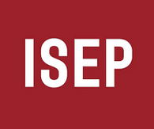

Engenheiro de Software
Software Engineer
Depois de concluir a licenciatura em Gestão e adquirir experiência profissional, percebi que era na área da tecnologia e desenvolvimento de software que queria construir o meu futuro. Isso levou-me a regressar à faculdade e tirar uma segunda licenciatura em Engenharia Informática, onde encontrei a área em que realmente me sinto realizado profissionalmente.
After completing my degree in Management and gaining professional experience, I realized that technology and software development was my true calling. This led me to return to university and pursue a second degree in Computer Engineering, where I found my professional fulfillment.

Instituto Superior de Engenharia do Porto (ISEP)Conecta-te comigo para discussões sobre projetos, tecnologia e inovação.
Connect with me to discuss projects, technology and innovation.